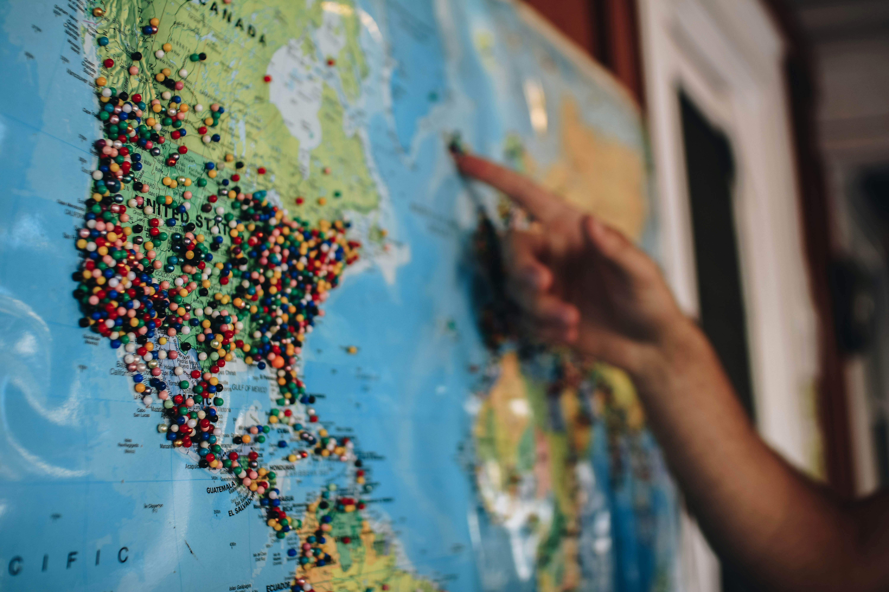

Destinos recomendados
En la Feria de Viajes podrás descubrir los lugares más increíbles del mundo. Aquí te dejamos una lista de destinos que no te puedes perder:
🌴 Top 5 destinos internacionales
- Japón - Cultura, tecnología y tradición.
- Islandia - Naturaleza y auroras boreales.
- Italia - Arte, historia y gastronomía.
- Perú - El encanto del Machu Picchu.
- Australia - Playas, surf y vida salvaje.
🏞️ Lugares destacados en España
- Sevilla - Flamenco y arquitectura andaluza.
- Granada - La Alhambra y sus vistas.
- Bilbao - Museo Guggenheim y costa vasca.
- Barcelona - Modernismo y playas urbanas.
Más información
Si quieres conocer más sobre algunos de estos destinos, visita:
